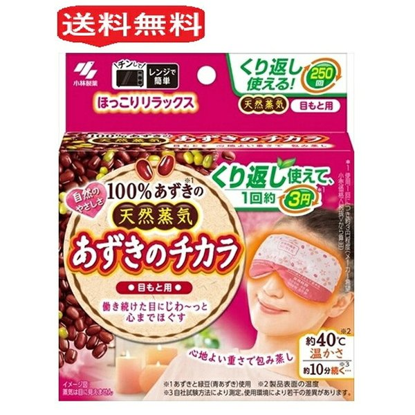
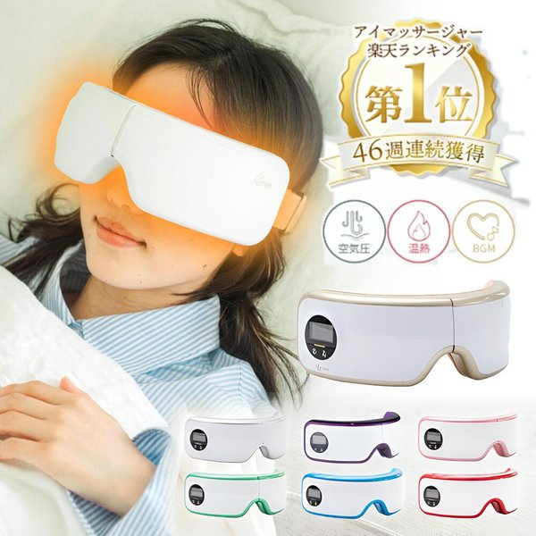
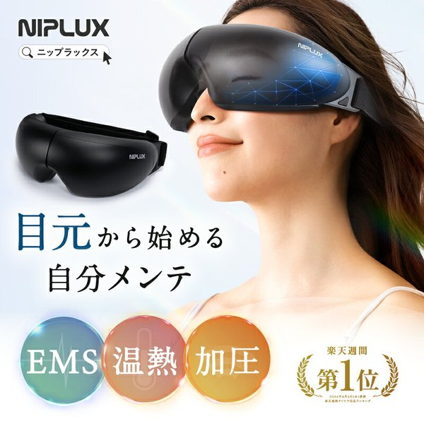
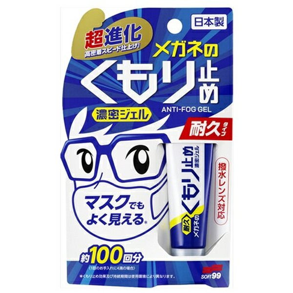
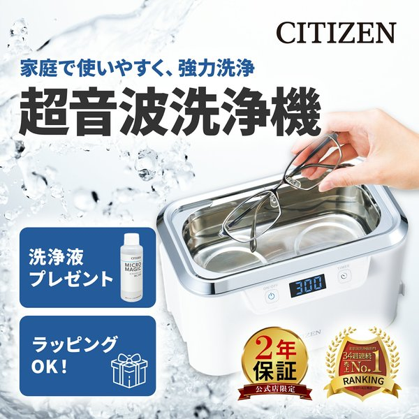
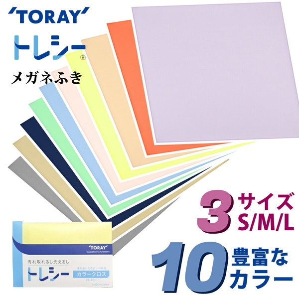
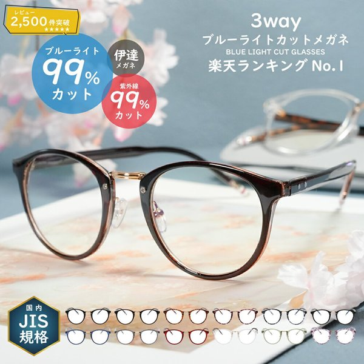
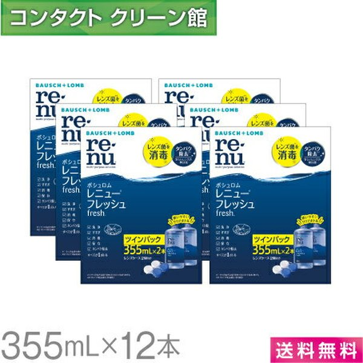
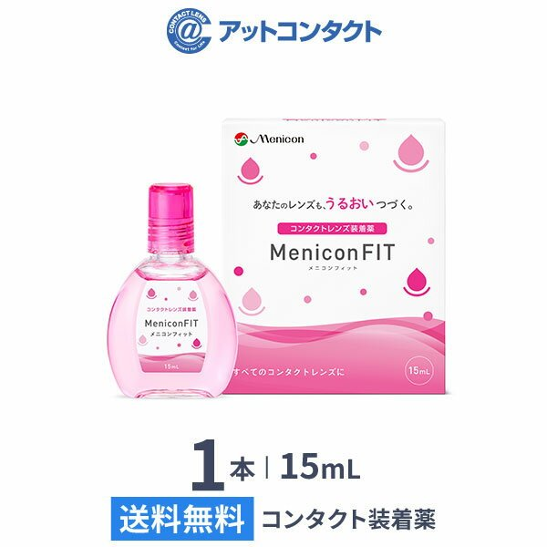

【2026年・目の疲れとドライアイ対策】ホットアイマスク・アイマッサージャー・メガネ曇り止め・超音波洗浄機・PCメガネ・コンタクトケア10選｜花王・小林製薬・シチズン・ボシュロムを実売価格で比較
目の疲れやドライアイは、目薬だけでは追いつかないことがあります。目を温める、レンズの汚れを落とす、画面のブルーライトを減らす。原因が違えば、効く道具も変わります。
選ぶ軸は3つです。「まず温めるか冷やすか」。寝る前のケアなら蒸気のホットアイマスク、朝のむくみなら冷感タイプ。温冷を切り替えられるものは1つで両方に対応できます。「次にメガネの手入れ」。曇り止めと超音波洗浄機、拭きクロスの3つがあれば、レンズの汚れと曇りの悩みはほぼ解消します。「最後にコンタクト」。洗浄液と装着液を分けて持つと、装着時の異物感と乾燥がやわらぎます。
本記事では、楽天市場で人気・高評価の目の疲れ・メガネ快適グッズ10選を、実売価格とレビュー評価つきで写真付き紹介します。
- おすすめ10選 スペック・特徴比較表
- BEST 1｜蒸気でホットアイマスク 12枚入り
- BEST 2｜あずきのチカラ 目もと用 1個
- BEST 3｜コードレス充電式アイマッサージャー
- BEST 4｜EMS EYE RELAX アイリラックス
- BEST 5｜メガネのくもり止め 濃密ジェル 10g
- BEST 6｜超音波洗浄機 SWT710
- BEST 7｜メガネ拭き カラークロス 10色
- BEST 8｜PCメガネ ボストン型 ブルーライトカット
- BEST 9｜レニューフレッシュ 355ml×12本
- BEST 10｜メニコンフィット 装着液 15ml
- 【読者負担0円】買わなくても得する無料サービス
- まとめ：目の疲れ・メガネ快適グッズ10選の選び方
| 順位 | 商品名 | ブランド | 最大の特徴・おすすめ理由 | 総合評価 |
|---|---|---|---|---|
| BEST 1 | 蒸気でホットアイマスク 12枚入り | 花王（めぐりズム） | 開封して装着するだけ | 4.70 |
| BEST 2 | あずきのチカラ 目もと用 1個 | 小林製薬 | レンジで温めて繰り返し使える | 4.75 |
| BEST 3 | コードレス充電式アイマッサージャー | ラルーナ（LaLuna） | コードレスで場所を選ばない | 4.54 |
| BEST 4 | EMS EYE RELAX アイリラックス | NIPLUX | EMS・温熱・加圧の3機能 | 4.37 |
| BEST 5 | メガネのくもり止め 濃密ジェル 10g | ソフト99 | 1本で約100回分 | 4.60 |
| BEST 6 | 超音波洗浄機 SWT710 | シチズン | 2つの振動子でしっかり洗える | 4.68 |
| BEST 7 | メガネ拭き カラークロス 10色 | 東レ（トレシー） | 10色・3サイズから選べる | 4.48 |
| BEST 8 | PCメガネ ボストン型 ブルーライトカット | Hodopus | カット率99%・JIS検査済み | 4.44 |
| BEST 9 | レニューフレッシュ 355ml×12本 | ボシュロム | 洗浄・消毒・保存が1本で済む | 4.81 |
| BEST 10 | メニコンフィット 装着液 15ml | メニコン | 装着時の異物感をやわらげる | 4.68 |
蒸気でホットアイマスク 12枚入り

花王のめぐりズムは、開封して装着するだけで約20分、蒸気の心地よさで目もとを温める使い捨てアイマスクです。電子レンジも電源もいらないので、寝る前のベッドの中でも、移動中の新幹線や飛行機の中でもそのまま使えます。無香料のほか、完熟ゆず・ラベンダー・カモミール・森林浴・ひのき・金木犀など香りから選べるので、気分に合わせて使い分けられます。目を温めるとまぶたの重さがほぐれ、PC作業のあとの「目が開かない」感覚が軽くなります。楽天市場での実売価格は約1,650円（2026年11月時点）。
- 開封して装着するだけ
- 香りの種類が豊富
- 12枚入りで毎日使いやすい
- 使い捨てなので、毎日使うとコストはかさむ
あずきのチカラ 目もと用 1個

小林製薬の「あずきのチカラ」は、天然あずきを電子レンジで温めて使う温熱ピローです。あずきの天然蒸気がじんわり続くので、使い捨てカイロより乾燥しにくく、目もとを包むように温められます。1個で約250回使えるため、毎晩の習慣にしても消耗品の買い足しが少なくて済みます。冷蔵庫で冷やせば冷感アイピローとしても使え、疲れ方に合わせて温冷を切り替えられます。楽天市場での実売価格は約1,324円（2026年11月時点）。
- レンジで温めて繰り返し使える
- 天然あずきの蒸気で乾燥しにくい
- 冷やして冷感アイピローにも
- 使うたびに電子レンジでの加熱が必要
コードレス充電式アイマッサージャー

ラルーナのアイマッサージャーは、エアーの加圧と温熱で目もとをケアするコードレス式です。充電式なので、コンセントの位置を気にせずソファでもベッドでも使えます。目元を押さえるように膨らむエアーと温かさが同時にくるので、長時間PCを見た日の「目が重い」感覚をほぐす用途に向いています。レビューは6,619件で、価格帯のわりに評価が安定しているタイプです。楽天市場での実売価格は約9,980円（2026年11月時点）。
- コードレスで場所を選ばない
- エアー加圧と温熱を同時に
- レビュー6,619件の実績
- 1万円前後と、アイマスクとしては高価な部類
EMS EYE RELAX アイリラックス

NIPLUXの「EMS EYE RELAX」は、EMS・温熱・加圧の3つを1台にまとめた目元ケア機器です。折りたためるので、付属のケースに入れて旅行や出張にも持っていけます。遮光性があり、ケアしながらそのまま休めるのも使いやすいところ。EMSは強度を段階で選べるため、初めての人でも弱めから始められます。目元のスッキリ感を優先したい人向けの上位モデルです。楽天市場での実売価格は約16,500円（2026年11月時点）。
- EMS・温熱・加圧の3機能
- 折りたたんで携帯できる
- 遮光してそのまま休める
- 16,500円と価格は高めで、初めての人には勇気がいる
メガネのくもり止め 濃密ジェル 10g

ソフト99の「メガネのくもり止め 濃密ジェル」は、レンズに少量を塗って拭き伸ばすタイプの曇り止めです。1本で約100回分と長く使え、マスクをしたままでも視界が曇りにくくなります。スプレー式と違って液だれせず、外出先でもさっと塗り直せるのが利点。撥水加工のレンズにも使える処方で、冬のマスクシーズンに1本あると助かる定番です。楽天市場での実売価格は約871円（2026年11月時点）。
- 1本で約100回分
- マスクをしても曇りにくい
- 撥水レンズにも使える
- 塗りムラがあると効果が落ちるので、薄く均一に伸ばす
超音波洗浄機 SWT710

シチズンの超音波洗浄機 SWT710は、2つの振動子で水の揺れを起こして汚れを浮かせる家庭用モデルです。メガネのレンズとフレームの隙間、鼻パッドの裏側など、布で拭いても落ちない汚れが取れます。時計のベルト、アクセサリー、入れ歯の洗浄にも使え、洗浄液が付属します。2年保証付きで、公式ショップからの販売です。楽天市場での実売価格は約9,880円（2026年11月時点）。
- 2つの振動子でしっかり洗える
- 洗浄液が付属
- 2年保証付き
- 置き場所にそれなりの幅を取るので、洗面台の広さを確認する
メガネ拭き カラークロス 10色

東レのトレシーは、超極細繊維で皮脂や油膜をからめ取るメガネ拭きです。洗って繰り返し使えるので、1枚あると何年も使えます。10色から選べて、19cm・24cm・30cmのサイズも選べるため、家用の大判と持ち歩き用の小さめを分けられます。メガネだけでなく、スマホ画面やカメラのレンズ、PCモニターの拭き掃除にも使えます。楽天市場での実売価格は約605円（2026年11月時点）。
- 10色・3サイズから選べる
- 洗って繰り返し使える
- スマホやカメラのレンズにも
- 汚れが落ちにくくなったら買い替えが必要
PCメガネ ボストン型 ブルーライトカット

HodopusのPCメガネは、ブルーライトカット率99%、UV420カットの度なしメガネです。JIS検査済みで、レンズの色味がほとんど気にならないクリアタイプなので、画面の色を見ながらの作業でも違和感が少なめ。ボストン型のセルフレームで、14色から選べます。メガネケースと拭きクロスが付属し、鼻当て付きでずれにくい設計です。楽天市場での実売価格は約2,680円（2026年11月時点）。
- カット率99%・JIS検査済み
- 14色から選べる
- ケースとクロス付き
- 度付きにはできないので、視力補正が必要な人は別途用意する
レニューフレッシュ 355ml×12本

ボシュロムのレニューフレッシュは、ソフトコンタクトレンズ用のマルチパーパス液です。洗浄・すすぎ・消毒・保存を1本でこなせるので、ケア用品を何種類もそろえる必要がありません。355mlが12本入りのお買得セットで、毎日使う人でも数か月分をまとめてストックできます。レビューは3,032件の定番で、価格と評価のバランスが取りやすい商品です。楽天市場での実売価格は約4,490円（2026年11月時点）。
- 洗浄・消毒・保存が1本で済む
- 12本セットでストックできる
- レビュー3,032件の定番
- 12本分の収納場所が必要で、使用期限も確認しておく
メニコンフィット 装着液 15ml

メニコンのメニコンフィットは、ソフトコンタクトレンズを装着する前にレンズへ1滴つける装着液です。レンズと目の間に薄いクッションができるので、装着した瞬間のゴロゴロした異物感がやわらぎます。乾燥が気になる日や、新しいレンズに慣れていない時期に使いやすい一本。15mlの小さなボトルなので、ポーチに入れて持ち歩けます。楽天市場での実売価格は約640円（2026年11月時点）。
- 装着時の異物感をやわらげる
- 乾燥が気になるときに使える
- 15mlで持ち歩きやすい
- 開封後は早めに使い切る
この記事の商品を買う前に、まずは無料で得する選択肢をチェック。どれも登録・利用は0円で、無料期間中に解約すれば料金はかかりません。読みたい雑誌がある人、ポイントを貯めたい人、アンケートなら気軽という人、それぞれに合うものを選べます。
初回31日無料・無料期間中に解約すれば0円 → 楽天ポイントモール｜登録無料で毎日ポイ活
買い物なしでもポイントが貯まる無料サービス → 楽天インサイト｜アンケートに答えてポイント
登録無料・すきま時間のアンケートで貯まる → 楽天カード｜年会費永年無料
新規発行・年会費ずっと0円 →
4つのサービスの違いと使い分けは「出費0円で得する！買わずにポイントが貯まる無料サービス厳選4選」でまとめています。
💡 まとめ：目の疲れ・メガネ快適グッズ10選の選び方
目の疲れは、温める・洗う・守るの3方向から攻めると整理しやすくなります。温めるなら、手軽な花王のめぐりズムと、繰り返し使える小林製薬のあずきのチカラを1つずつ。しっかりケアしたい人は、ラルーナやNIPLUXの温熱マッサージャーが向いています。メガネは、ソフト99のくもり止めと東レのトレシー、汚れが気になるならシチズンの超音波洗浄機。画面を見る時間が長い人はHodopusのPCメガネを1本足すと、就寝前の目の疲れ方が変わります。コンタクトは、ボシュロムのレニューで洗浄と保存をまとめ、乾燥が気になる日はメニコンの装着液を併用する。この順番でそろえると、買い足しの重複がありません。
楽天市場では「5と0のつく日」や「お買い物マラソン」などのキャンペーンに合わせて購入すると、ポイント還元が最大化してお得に手に入ります。ぜひチェックしてみてくださいね。